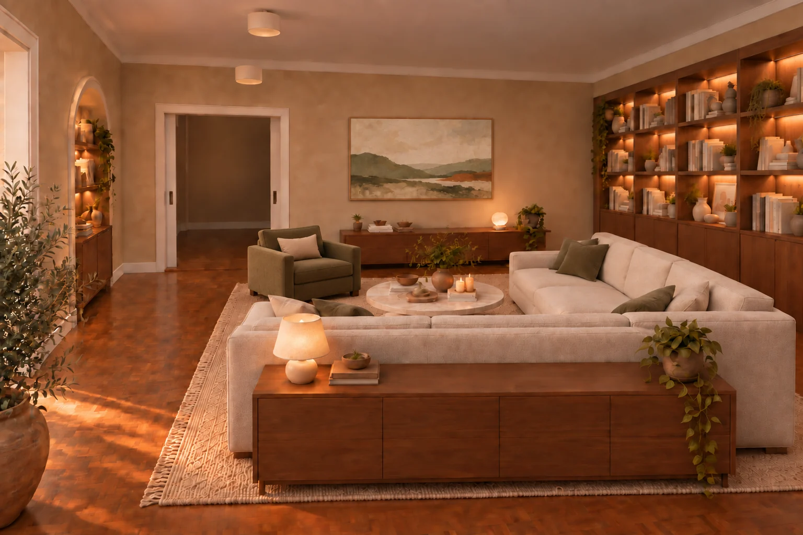
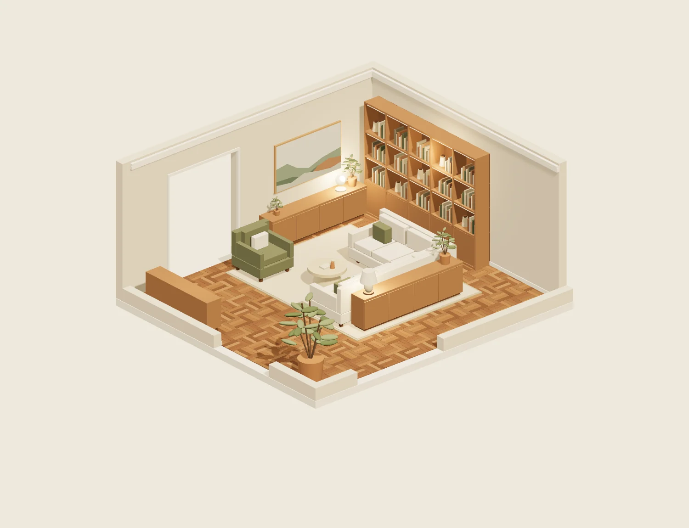

CASA NOVA / OPÇÃO 05 · REVISÃO 04
Linhas direitas. Mais espaço para livros.
Sofá e poltrona de linhas direitas, madeira quente, livros e tons de linho e verde-azeitona. Um quadro ocupa a parede no dia a dia e sai quando é hora de projetar o filme.

Uma paisagem abstrata para a parede
Proposta de 150 × 90 cm, com fundo areia, formas verde-azeitona e um apontamento terracota, numa moldura fina de madeira. Os verdes ligam-se à poltrona e os tons de terra acompanham os móveis e a cerâmica.
Para alternar com o cinema: usar uma tela leve, sem vidro, com fixação que permita retirá-la. Antes do filme, o quadro sai e fica guardado noutra divisão, deixando a parede livre. A fixação e as dimensões finais serão definidas com a peça real.
Disposição e luz

P1 = planta no chão · P2 = vaso sobre o aparador · E = estante · P = projetor no teto · T = candeeiro. Cotas de estudo em metros.
Mobiliário e circulação
Sofá e poltrona com linhas direitas
Braços finos e almofadas mais firmes nos dois assentos: linho claro no sofá e verde-azeitona na poltrona. A dimensão proposta passa a cerca de 2,70 × 1,95 m, com o retorno à direita de quem olha para o filme.
Uma biblioteca de três metros
A estante ocupa cerca de 3,00 m ao longo da parede direita. Cinco módulos, livros, cerâmica e arrumação inferior. O sofá aproxima-se do centro, deixando 65 cm para alcançar as prateleiras.
Um aparador atrás do sofá
Madeira quente, frentes simples e cerca de 2,30 × 0,35 m. O candeeiro e uma pequena planta passam para o tampo, libertando o chão. Fica aproximadamente 1,20 m entre o aparador e a fachada.
O mesmo ambiente acolhedor
O tapete, as plantas, o nicho com livros e a luz quente mantêm o ambiente acolhedor. Para o filme, retira-se o quadro e a iluminação das estantes pode baixar ou apagar.
A sala em 3D
Explora a disposição aqui na página: roda, aproxima e muda de vista. O quadro, a parede livre e a projeção acompanham a escolha na galeria.

Passagens, medidas e pontos de luz
Circulação: 90 cm na faixa principal à esquerda; 65 cm junto à estante para acesso aos livros. Atrás do aparador, cerca de 1,20 m até à fachada, reduzindo para cerca de 98 cm no pequeno trecho alinhado com a grelha/radiador. São medidas do esquema, a confirmar no local.
G1/G2: manter a intenção de luz geral regulável. E1: alimentação para a estante ampliada. N1/A1: luz do nicho e possibilidade de aplique. T: candeeiro agora sobre o aparador; prever alimentação junto à peça, com o cabo fora da passagem. P: reserva horizontal no teto para o projetor, cuja montagem depende do equipamento escolhido.
{kind=link}